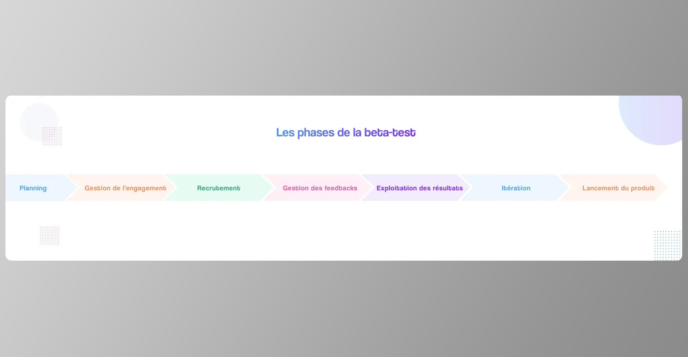
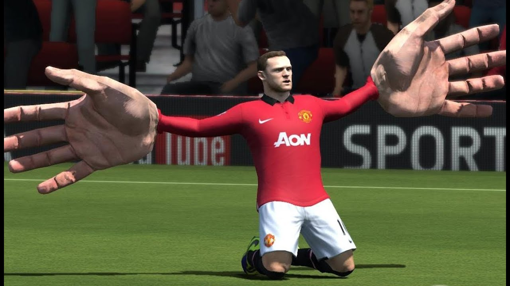
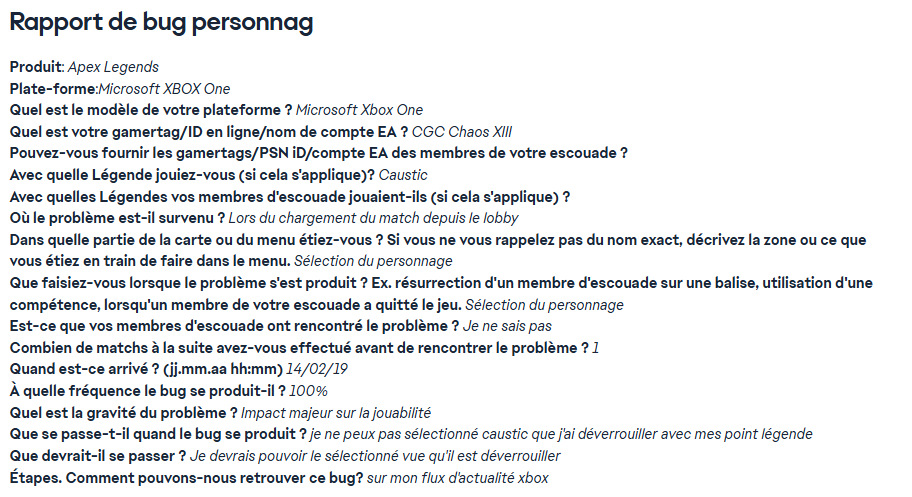
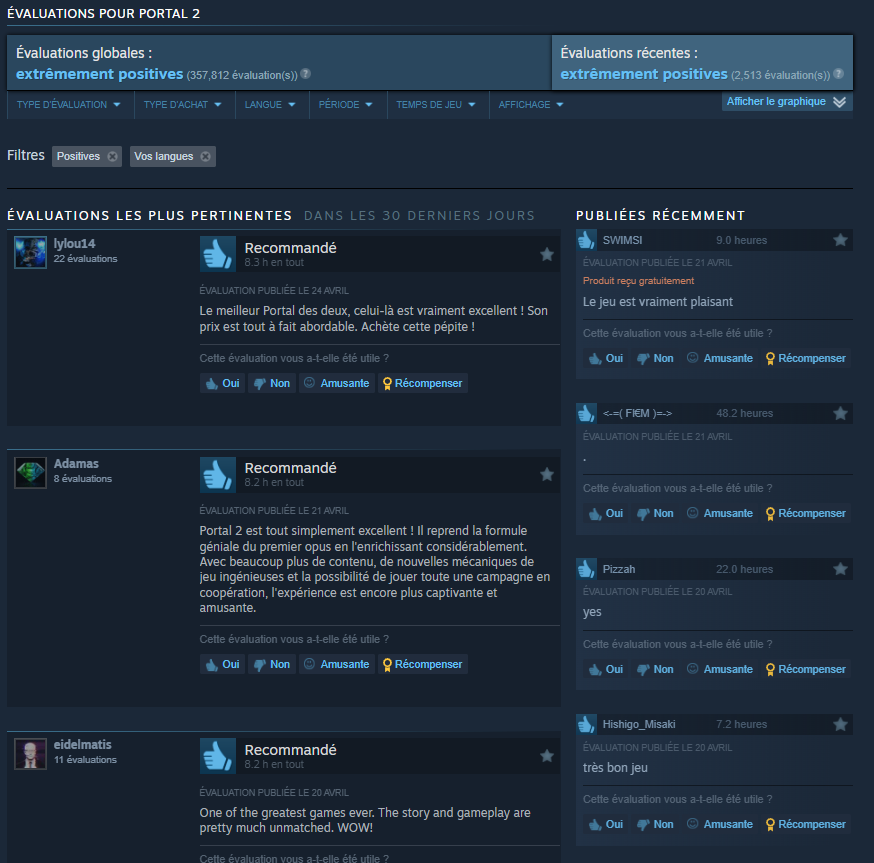
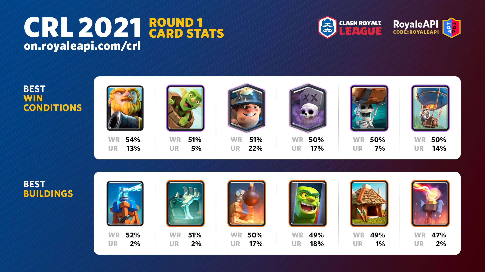
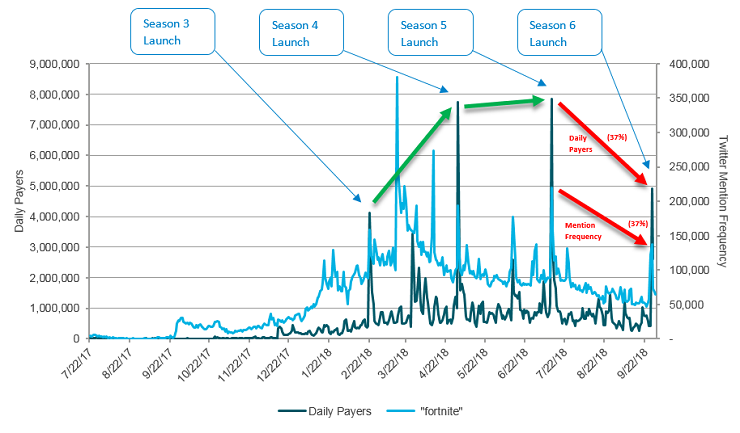

Avant de lancer officiellement ton jeu, il faut absolument le tester – et pas juste sur ton propre PC, hein ! Les bêta-tests, ce sont ces moments décisifs où tu invites de vrais joueurs (et non, pas seulement tes potes indulgents) à mettre ton jeu à l’épreuve. C’est la toute première fois que ton projet quitte le cocon protecteur de ton équipe pour affronter la dure réalité : celle du public extérieur, parfois sans pitié, mais toujours ultra-précieuse.
Il faut tester sur PC, consoles, frigos connectés s’il le faut. L’important, c’est que ça tourne partout.
Juste au-dessus , tu retrouveras les grandes étapes pour réussir ton beta-test : de la préparation au lancement, en passant par le recrutement des testeurs, la gestion des retours et les ajustements.
Lors d’une bêta, ton jeu est presque terminé, mais crois-moi, c’est souvent là que le pire se dévoile. Entre les bugs sournois qui s’étaient cachés jusque-là, les comportements imprévus qui cassent tout, et les situations absurdes (genre ton personnage principal qui reste bloqué en T-pose au milieu d’une cinématique ultra-dramatique), les surprises ne manquent jamais.
Ça , par exemple, c’est exactement le genre de bug que tous les développeurs essaient d’éviter au max
Les bêta-testeurs sont là pour repérer tout ce qui cloche : quêtes bloquées, mécaniques incompréhensibles, équilibrage foireux... Bref, tout ce que toi, avec ta vision de créateur, tu n’aurais peut-être jamais vu. Chaque problème déniché est une victoire : mieux vaut rire maintenant que pleurer à la sortie officielle !
Exemple : Quand Cyberpunk 2077 est sorti en 2020, l'absence d'une phase de bêta-test publique étendue a conduit à des dizaines de bugs majeurs : PNJ qui disparaissent, voitures qui explosent sans raison, quêtes impossibles à terminer... Résultat : une réputation écornée et des remboursements massifs. Tester correctement, c’est éviter de transformer son lancement en cauchemar médiatique.
Ce n’est pas qu’une formalité : ces tests grandeur nature sont essentiels pour tester la robustesse du jeu sur des configurations variées et recueillir des retours massifs, souvent très différents selon le profil des testeurs. Plus ton panel de joueurs est varié (casuals, hardcore gamers, joueurs sur vieux laptops, sur consoles modernes, etc.), plus ton jeu sera prêt à affronter la vraie vie.
Un jeu n’existe vraiment que le jour où quelqu'un d’autre y joue.
Conseil : Pendant la bêta, garde un œil attentif sur tous les retours : critiques, coups de cœur, idées de génie... chaque commentaire compte. Le volume de feedbacks peut être impressionnant, alors organise-toi pour tout suivre, même si tu dois jongler entre dizaines de suggestions et rapports de bugs. Un bon outil de suivi peut littéralement te sauver la vie dans cette phase chaotique. Et surtout, reste ouvert : ce sont parfois les remarques les plus inattendues qui mènent aux meilleures améliorations ! Dis toi toujours qu'un bug découvert en bêta est un drame évité à la sortie.
Quand tout est prêt : on lance ! Le moment du lancement, c’est le grand saut. La version "gold" du jeu est envoyée aux stores (tels que Steam, PlayStation Store, et Epic Games), et tout le travail de marketing prend le relais. Ce moment marque la fin d'un long processus de développement et le début de l'attente du public.
Les trailers, les réseaux sociaux, les salons comme l’E3 et la Gamescom, ainsi que les démos jouables doivent être prêts pour donner un maximum de visibilité à ton jeu et créer la hype autour de la sortie. Le marketing doit se déployer à grande échelle pour faire découvrir le jeu à un public large et varié.
C’est également à ce moment-là que la gestion de la communauté devient cruciale. Discord (au passage, n’hésite pas à rejoindre le serveur Discord de Kage no Michi si ce n’est pas déjà fait !), forums, réseaux sociaux : il faut être partout, répondre aux attentes des joueurs et maintenir un lien constant avec eux pour éviter les frustrations et les doutes. Le but est de maintenir l'enthousiasme et d'attirer plus de joueurs dans l’univers du jeu.
Ce moment marque aussi le début d’une phase importante : la préparation des mises à jour à venir, telles que les patchs, DLC, extensions ou correctifs day one. Les équipes doivent être prêtes à intervenir rapidement en cas de problèmes ou de bugs après la sortie du jeu.
Enfin, l’analyse des retours des joueurs et de la presse est primordiale pour évaluer l'impact du lancement. Chaque retour est précieux pour ajuster et améliorer l’expérience de jeu, que ce soit à travers des mises à jour ou de nouvelles fonctionnalités.
Un trailer bien monté peut faire exploser la hype autour d’un jeu... ou la détruire.
Les retours des joueurs sur Steam ou les réseaux peuvent changer le destin d’un jeu en quelques jours.
Une fois le jeu lancé, la communauté s'exprime, et ses avis sur des plateformes comme Steam jouent un rôle crucial. Les premières critiques sont un moment décisif : les joueurs partagent leurs impressions, qu’elles soient positives ou négatives, et cela peut rapidement influencer l’image du jeu. Si les critiques sont globalement positives, l’effet boule de neige peut propulser le jeu vers un succès encore plus grand. En revanche, des critiques négatives peuvent créer des tensions et nuire à la réputation du jeu, rendant crucial un suivi et des mises à jour rapides.
Les équipes de développement doivent également prêter attention aux tendances émergentes dans les commentaires des joueurs. Parfois, une petite fonctionnalité peut faire une différence énorme pour la communauté. En intégrant les retours de manière proactive, tu peux améliorer continuellement le jeu et renforcer la fidélité des joueurs.
Un lancement sans bug, c’est comme un anniversaire sans gâteau : ça existe, mais c’est rare.
Exemples de lancements épiques : The Witcher 3: Wild Hunt (ancement mondial impressionnant), No Man’s Sky (rédemption par les updates), Elden Ring (succès critique et populaire).
Une fois ton jeu dans les mains des joueurs, ce n’est pas le moment de faire une pause café. Pas du tout. C’est ici qu’on commence la vraie gestion : les mises à jour, les corrections de bugs, et les ajouts de contenu. Le lancement n'est que la première étape d'un long voyage, et la suite, souvent négligée, est tout aussi cruciale. Parce que crois-moi, après que ton jeu soit lancé, tu vas recevoir des centaines de retours de joueurs impatients, réclamant plus de fonctionnalités, de niveaux, de skins, voire des ajustements dans la mécanique du jeu. Si tu veux garder l’engouement, c’est à toi de jouer, de répondre aux attentes des joueurs tout en maintenant la stabilité du jeu.
Pontypants , c’est l’exemple parfait du dev indie qui lâche rien. Il a bossé en solo pendant 4 ans sur son jeu, en gérant tout : code, graphismes, design, marketing… Tout ça avec la passion en moteur et sans grosse équipe derrière lui. Résultat : il a réussi à sortir son jeu sur Steam et Nintendo Switch. C’est ce genre de parcours qui montre que, même si c’est ultra dur, c’est possible de tout donner et d’y arriver dans le monde du jeu vidéo indépendant.
Le suivi post-lancement commence par la correction de bugs. Peu importe combien de fois tu as testé le jeu, des bugs imprévus finiront toujours par surgir après le lancement. Certains seront mineurs, d’autres plus perturbateurs pour l’expérience de jeu. C’est à ce moment que tu vas devoir intervenir rapidement. Le joueur d’aujourd’hui est impatient et peut abandonner un jeu à cause d’un seul bug gênant. Les retours des joueurs, qu'ils viennent de forums, de réseaux sociaux ou de plateformes comme Steam, deviendront ta source d’information principale. Tu devras être rapide et réactif dans la gestion des problèmes.
En plus des corrections, il te faudra aussi penser à l’équilibrage. Parfois, un élément du jeu peut paraître trop facile ou trop difficile après que plusieurs joueurs l'ont testé. Le but est de créer une expérience de jeu fluide et agréable pour tous les types de joueurs. Cela implique des ajustements constants, comme la modification de la difficulté, la révision des systèmes de progression, ou la correction des éléments de gameplay qui ne fonctionnent pas comme prévu.
Les stats de la CRL 2021 illustrent parfaitement l'importance des équilibrages post-lancement dans les jeux compétitifs comme Clash Royale. On observe que certaines cartes dominent rapidement la méta grâce à leur taux de victoire et d'utilisation, ce qui pousse les développeurs à intervenir régulièrement pour garantir une expérience de jeu variée et équilibrée. Ces ajustements sont essentiels pour éviter qu'un petit groupe de cartes ne prenne le dessus et pour maintenir l'intérêt des joueurs tout au long de la saison. L'équilibrage est un travail d'équipe entre la communauté et les développeurs, basé sur l'analyse des statistiques comme celles-ci !
Mais ce n’est pas tout ! Le suivi post-lancement inclut aussi l’ajout de nouveaux contenus pour maintenir l'intérêt des joueurs. C’est là que les DLC (contenus téléchargeables) entrent en jeu. Les DLC permettent non seulement d’ajouter des éléments de gameplay, mais aussi d'offrir des skins, de nouveaux niveaux, ou même des histoires supplémentaires. Ces ajouts contribuent à garder le jeu frais et excitant pour la communauté.
Tu peux aussi organiser des événements spéciaux, comme des tournois, des challenges, ou des événements saisonniers. Ces événements temporaires incitent les joueurs à revenir dans le jeu pour obtenir des récompenses exclusives ou pour relever de nouveaux défis. Il peut s’agir d’un simple changement d’apparence dans le jeu ou d’une mise à jour complète qui introduit un mode de jeu inédit.
Un autre aspect crucial du suivi post-lancement est l’analyse des données de jeu. Cela inclut l’utilisation des analytics, qui t'aideront à comprendre comment les joueurs interagissent avec le jeu. Où passent-ils le plus de temps ? Quels niveaux rencontrent-ils des difficultés ? En analysant ces heatmaps et en récoltant des feedbacks des joueurs, tu peux identifier les points faibles et les opportunités d'amélioration.
À chaque nouvelle saison, Fortnite cartonne : tout le monde revient, on en parle partout... puis ça redescend doucement. En analysant ces chiffres, les développeurs peuvent savoir quelle saison les joueurs ont le plus appréciée et ainsi adapter le jeu pour garder l’intérêt des joueurs au top !
Le suivi post-lancement n’est pas un travail ponctuel, c’est un travail de long terme. Tu vas jongler avec des mises à jour régulières, la correction de bugs inattendus, l’ajustement de l’équilibre du jeu, et l’ajout de contenu pour maintenir l’intérêt des joueurs. Les patchs arrivent, et c’est un peu comme si tu refaisais un puzzle que t'avais déjà posé. Tu résous un problème, mais un autre surgit, et ainsi de suite. Cependant, c’est ce processus qui permet à ton jeu de continuer à prospérer et à évoluer. Si tu fais bien ton travail, tu verras ton jeu grandir et s'améliorer au fil du temps, et les joueurs le reconnaîtront.
La gestion post-lancement, c’est comme entretenir un jardin : il faut constamment arroser, tailler et soigner pour que tout reste en bonne santé.
Le lancement d’un jeu vidéo ne se limite pas à appuyer sur "publier" : c’est le point culminant d’un processus exigeant qui commence bien avant la sortie officielle. Les phases de bêta-test, menées avec de vrais joueurs sur un maximum de plateformes, sont indispensables pour débusquer les bugs, ajuster l’équilibrage et recueillir des retours essentiels. Un test raté peut transformer un lancement en fiasco, comme l’a montré l’exemple de Cyberpunk 2077, tandis qu’une préparation rigoureuse maximise les chances de succès.
Une fois le jeu lancé, le travail continue : il faut assurer un suivi post-lancement réactif, corriger rapidement les problèmes, écouter la communauté et proposer des mises à jour ou du nouveau contenu pour maintenir l’engouement.
L’analyse des retours et des données de jeu guide les améliorations futures, tandis que la gestion de la communauté et du marketing reste cruciale pour la réputation du jeu.
En somme, un lancement réussi repose sur trois piliers : des tests approfondis, une communication et une écoute actives envers les joueurs, et un engagement constant dans l’amélioration du jeu après la sortie.
C’est cette dynamique qui transforme un simple lancement en succès durable.